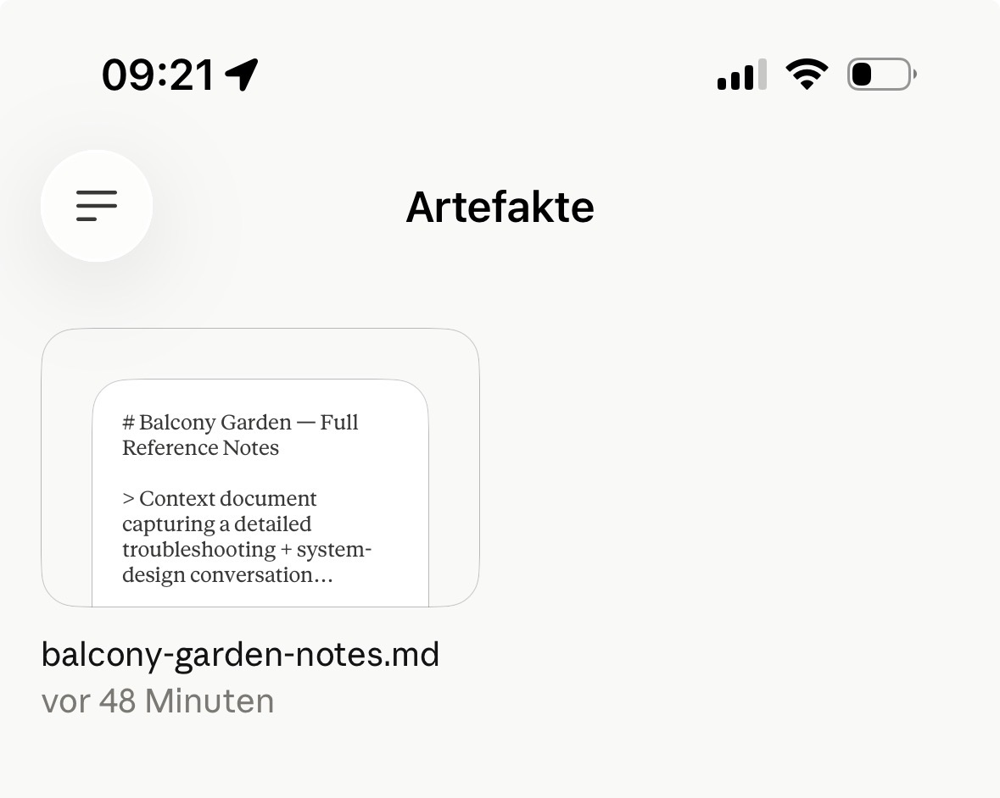

Sharing a Chat With Myself
The Remembering saga: 1. The Posts I Write to Forget · 2. Sharing a Chat With Myself · 3. Notes Left for the Next Me
I tried to hand a conversation from Claude to Claude. It turned out that was the one thing I wasn't allowed to do.
A chat worth keeping
It started with peppers. I had two pepper plants on my balcony flowering like mad and setting no fruit, and I'd been talking it through with Claude — Anthropic's AI — on my phone. One question became twenty. Somewhere in there the conversation stopped being about peppers and became a full teardown of my whole balcony: the tomatoes, the lemon tree that overwinters in my living room, the wind that funnels between the two concrete towers outside my window. It was good. It was the kind of thing I wanted to keep.
Then it hit a wall of its own. Every AI chat has a memory limit — a ceiling on how much of the conversation it can hold in its head at once. Mine filled up. The chat couldn't continue.
No problem, I thought. I'll move it to Claude Code — the version of Claude that lives in my terminal, where every note and file is just a file on my own machine. I'd continue the conversation there, with room to breathe. All I needed to do was carry the conversation across.
That's where the trouble started.
Weird that it can't share with itself
There's a Share button. I pressed it. Two options.
Share it with myself: disabled.
Or share it with a public. A small public — just my company — but a public. It mints a link anyone at work could open. A potential-public link I didn't want, for a chat about my peppers.
So: keep it truly private and have nothing to hand across, or make the link and open the door to the whole company. I bit the bullet and made the link. Nobody actually reads it — it grants a right to open, gated by the link, not a leak. But it still made me flinch.
Then I handed the link to the other Claude.
Blank page.
It couldn't read it anyway. The share page is built for humans — a web page dressed up for a browser, behind a bot-check, the "prove you're not a robot" gate a lot of sites use — and the other Claude is exactly the automated visitor that gate exists to stop. So I'd handed my whole company a key to the one conversation I never wanted to share — a key that only turns if you also have the link — and it still didn't reach the only reader I actually wanted: my other self.
The one destination the export doesn't serve is the same tool that wrote it.
The document you have to smuggle
Fine — plan B. I asked the chat to write everything up as a document I could carry over myself.
It did. But you can't just hand a document from one session to another either. You save it, drop it into a folder both sides can see, and re-upload it into the new session. Sneaker-net — the office move of walking a file across the room on a floppy disk — except in 2026, between two windows of the same program.
And even that had a catch. The trick worked on my Mac's Claude app. On Claude for my iPhone, the same button just… didn't. Same account, same feature, nothing different except which slab of glass I was holding. I never found out why. It simply behaved like a different product depending on the device.

There it sat, in the little drawer where the phone keeps documents Claude has written for you: balcony-garden-notes.md, forty-eight minutes old, staring back at me. Written. Visible. Utterly stuck.
I'd now failed to move a conversation three different ways.
The one wall I left standing
By now I was annoyed enough to get stubborn. The conversation was right there, in the app on my Mac. Surely we could just read it off the disk?
We went looking. The actual messages weren't stored anywhere readable — not in any of the app's temporary files. The app's login — the digital keycard that proves I'm me — was on the disk, but scrambled, and the key to unscramble it sat in the Mac's protected keychain.
Here's the part I want to be honest about. When Claude reached for that key, Claude's own safety system stopped it. Reading credentials out of a locked store looks exactly like what a thief would do, so the guardrail slammed shut — correctly. That wall I left standing. It's the difference between getting into my own house through a door I have a key to, and jimmying a window because I can. We weren't going to jimmy the window.
So: not that path.
The door I already had
Then I remembered something I'd built weeks ago.
I have a tiny tool called usage-check that tells me how much of my Claude quota I've used. It gets that number by borrowing the login I already have sitting in Safari — the ordinary browser, where I'm logged into Claude's website like any other site. No locked app, no scrambled keycard. Just the same cookie a website uses to remember you between clicks.
That was the honest door. Not the app's vault — the browser I was already signed into.
So we built a sibling tool. I called it session-pull. It uses the cookie I'm already carrying to ask Claude's website the exact same thing its own pages ask under the hood — "give me this conversation." The website saw a request that looked just like me, because it was me, and answered.
The whole thread came back. Every question, every reply, all fourteen garden photos. The conversation I couldn't share with myself, I now had as a clean file on my own machine.
Anthropic had walled off every convenient path. The honest one was open the whole time.
The peppers were never the point
Here's where it gets funny. I'd started the day wanting to know why my peppers wouldn't fruit. I ended it having built a tool whose only job is to break my own chat history out of jail.
But the knowledge arrived in Obsidian, my second brain. So the garden chat got sorted into indoor plants, outdoor plants, and the wind-and-water logic that ties them together — with the original full transcript kept whole and untouched underneath, as the source of record. Then I handed all of that to a fresh Claude session running on my laptop that I can drive from my phone, primed and waiting to pick up the garden talk where the dead one left off.
Finally, the new corrected session runs in Claude Code, where every conversation is already just a file I own. It is no longer trapped. The gardening chat finally sits on the solid ground it should have been standing on from the very beginning — the ground the shiny app never gave it.
One detail I don't understand. Claude Code — the terminal side, where my data is already mine — ships with a command for exactly this: continue the current session over in the Claude desktop app. One command, Code to Desktop. There is no command for the way back. Desktop to Code doesn't exist. The single official bridge runs in exactly one direction: out of the place where I own my words, and into the place where I don't. The reverse — the direction I actually needed — is the part I had to build myself.
So what
Anthropic builds the walls, and Claude tears them down — but only the ones that were never really about safety. The bot-check, the human-only share page, the phone-versus-Mac coin flip: those are product friction, and friction is routable. The locked keychain is a real wall, and it stayed up, because it should.
The lesson underneath is older than any of this: do the work you want to keep in a place where the data is already yours. The chat app is a graveyard for conversations — easy to check in, hard to get your own words back out. The moment a conversation is worth keeping, it belongs somewhere you can export without a heist.
My peppers, by the way, are going to be fine. It was the heatwave. They'll set fruit as soon as it cools — which it now has.